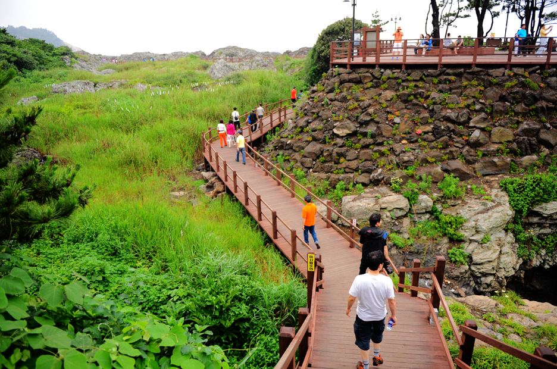
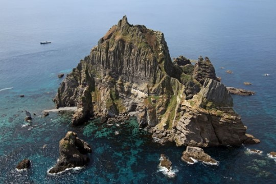

추천 여행지 - 신안

증도 - 소금 박물관
국내 유일의 이색박물관이라는 단순한 의미 이상의 의미를 지니고 있다. 최근에 소금에 대한 올바른
생각들이 제자리를 되찾아가면서 국산천일염에 대한 소중함이 새롭게 인식되고 있다. 소금박물관은 어렵게 천일염
을 지켜냈던 과거 역사의 소중함을 새삼 인식하면서 미래의 건강한 생명문화를 창조해가는 거대한 출발점이다.
이 곳에서는 소금밭 투어, 자염 투어도 할 수 있다.

홍도 - 해상 투어
홍도항 인근의 침식동굴들은 규암으로 형성된 지역이라 갖가지 형태의 동굴들과 기암들이 즐비한 곳이다.
유람선을 이용해 홍도의 아름다운 경치를 보길 바란다. 홍도는 천혜의 섬으로 차가 다닐 수 없다. 또한 주민의 수는 500명정도 밖에 되지 않는다고 한다.
이 곳에서는 내연발전소, 몽돌해변 등 다른 볼거리도 많으며 한국인이 가봐야 할 국내 여행지 1위로 선정되었다.
|
추천 여행지 - 제주도

올레길
제주를 여행하는 많은 여행자들이 제주 올레길의 매력에 빠져들고 있다.
아름다운 섬 제주를 걷다보면, 차를 타고 다니는 여행에서 볼수 없었던 제주의 본연의 모습을 발견하게 된다.
제주 중산간의 숨은 비경과 작은 섬들의 저마다 다른 매력을 느끼게 될 것이다.
제주 올레길은 정규 21개 코스, 비정규(섬 및 산간) 5개 코스를 합쳐 모두 26개 코스, 430km에 이르는 길을 갖추고 있다.
코스 TOP3
10-1코스 가파도 올레
(올레길 코스 중 가장 쉬운 코스라고 할수 있다. 오르막이 없고 길이도 짧기 때문에 누구나 쉽게 걸을 수 있다.
가파도는 한국의 유인도 중에서 가장 낮은 섬으로 한 시간이면 충분히 걸을 수 있다.)
21코스 하도 종달올레
(마을과 밭길로 1/3, 바닷길로 1/3, 그리고 오름으로 1/3 등 제주 동부의 자연을 고르게 체험할 수 있는 코스이며, 올레길의 마지막코스이다.
지미봉에서 내려다보는 풍광이 매우 아름다운 곳이다. 지미봉을 제외하고는 모두 평탄한 길이다.)
1-1코스 우도올레
(우도 올레는 제주도에 딸린 62개의 섬 가운데 가장 크고 일년 내내 쪽빛 바다색을 자랑하는 우도의 절경을 만끽할 수 있는 코스다.
전체적으로 큰 굴곡이 없어, 편하게 걸을 수 있는 길이다. 우도는 푸른 초원과 검은 돌담 그리고 등대가 아름다운 곳이다.)

한라산
이 잔류산괴의 정상부 화구에서 플라이스토세(世)에 다시 분화하였는데, 이때 분출된 유동성이 강한 알칼리성
현무암질이 사방으로 흘러내려 오늘날과 같은 순상화산(楯狀火山)이 형성되었다. 그러므로 제주 전체가 한라
산이라고 할 수 있으며 정상에 돌출한 암벽 부분이 종상화산으로 남아 있는 셈이다. 제주에는 약 250개의 기생
화산(寄生火山)이 솟아 있는데 한라산 국립공원 안에 40개 가량이 있다. 한라산에는 한라산눈꽃축제,
한라산철쭉축제 등 계절의 축제들을 하고 있다.
[네이버 지식백과] 한라산국립공원 [漢拏山國立公園] (두산백과)
|
추천 여행지 - 독도

울릉도와는 87.4㎞ 떨어진 곳에 위치해 있어 맑은 날에는 망원경이 없이도 울릉도에서 관측이 가능할 정도이며
울릉도의 독도전망대에 오르면 그 위치를 가늠할 수 있는데 도동항에서 배를 타고 들어가거나 묵호항에서 울
릉도로 들어오는 길에 둘러볼 수도 있다. 동도에는 등대와 선착장이 있어 일반인이 들어갈 수 있고 험준한 원
추형의 서도는 위급 시 어민들이 사용하는 대피소가 있다. 독도 유람선을 타면 독도 주변을 돌며 가제바위,
독립문바위, 촛대바위, 얼굴바위 등 각양 각색의 기암 절경을 감상할 수 있다.
[네이버 지식백과] 독도
|